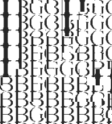

More info about using pictures for dithering here.
Matrix Used
Here you can see the gif used as a map. It contain four letters pictures of 30x30 px(choosed randomly) : IBGA
Result
And here is the dithered version. (Depending on the redenring of your browser and the resolution of you screen, the quality may vary (I swear it's super sharp on my screen)).
Here is a close up of edges, showing how the various frames merges at a gradients.
